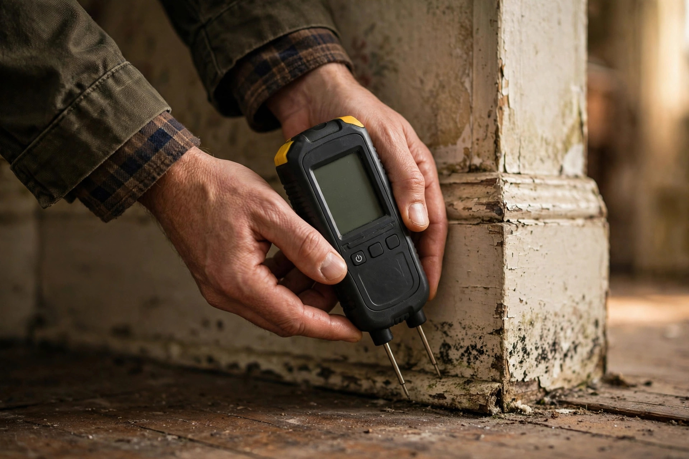

Mold Inspection in Nampa, ID
Nampa's older neighborhoods hide moisture in places you rarely look. A careful inspection finds it before it spreads — with a moisture meter, a trained eye, and no guesswork.

Where mold hides in Nampa homes
Downtown Nampa's housing stock dates to the 1900s through the 1940s — plaster walls, balloon framing, and no vapor barriers. That construction traps moisture in ways newer builds don't.
Behind plaster in pre-war walls
Lath and plaster holds moisture long after a leak stops. Growth can spread across the back of a wall while the room side looks fine.
Dirt-floor crawlspaces
Many older Nampa homes sit over unsealed crawlspaces. Ground moisture rises straight into floor joists and subflooring.
Attics with blocked soffits
Insulation pushed into eaves cuts off airflow. Winter condensation then feeds mold on the underside of roof sheathing.
How an inspection unfolds
Walk and look
Every room, closet, and accessible attic or crawlspace gets a visual pass. Staining, warping, and musty odors get flagged.
Measure moisture
A pin meter checks suspect drywall, baseboards, and framing. Readings above normal get mapped so nothing is missed.
Trace the source
Mold is a symptom. The inspection follows the moisture — plumbing, roof, grading, or condensation — back to its origin.
Report in plain words
You receive a written summary: what was found, where, and what it likely means. No jargon, no pressure.
Making sense of the findings
An inspection report shouldn't need a translator. Ours uses plain language: where moisture was found, how high the readings ran, and what that suggests. Numbers are compared against dry baseline readings from unaffected areas of the same house, so you can see the gap clearly.
Photographs mark each spot, and the summary separates urgent items from watch-list ones. A damp corner that needs monitoring reads differently from an active leak behind a wall — and the report makes that distinction obvious. If lab sampling was requested, those results arrive separately with an explanation of what the counts mean in context.
Bring the report to a contractor, a landlord, or a home seller. It stands on its own as documentation of the home's condition on the day of the visit.
One more thing the report covers: moisture sources you can fix yourself versus ones needing a tradesperson.
When do you need lab samples?
Inspection alone suffices
When growth is visible and the moisture source is obvious, lab testing adds little. The inspection documents what anyone can see and maps the moisture behind it. Most Nampa homeowners stop here — the findings are clear enough to act on.
Testing earns its keep
When no growth is visible but symptoms persist, or when a real estate transaction needs documentation, air or surface samples sent to a lab provide numbers. Testing also helps when the growth type matters for the remediation plan.
A renter in a 1920s bungalow near downtown Nampa notices a musty smell in the hallway closet. The inspection finds the closet shares a wall with a slow-dripping bathroom supply line. Moisture readings are high behind the baseboard. The fix is plumbing first, then drying — not just paint.
Common questions, straight answers
What does a mold inspection in Nampa actually include?
A walkthrough of the interior and accessible crawlspace or attic, moisture readings at suspect spots, and a written summary of what was found and where. No lab work unless you ask for it.
How long does an inspection take in a typical Nampa house?
Most single-family homes take 60 to 90 minutes. Larger homes or ones with a finished basement can run longer.
Do I need to leave during the inspection?
No. You can stay and ask questions as we go. Many homeowners find it useful to see the moisture readings firsthand.
What if you don't find any mold?
Then you get that in writing, plus notes on any moisture risks worth watching. A clean result is still a useful result.
Can an inspection tell me whether mold is dangerous?
An inspection identifies the type of growth visible and the moisture feeding it. For health questions, the CDC recommends talking with a healthcare provider.
Wondering what's behind that wall?
One call sets up an inspection at a time that suits you. Clear findings, honest guidance, no obligation.